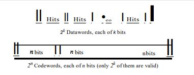
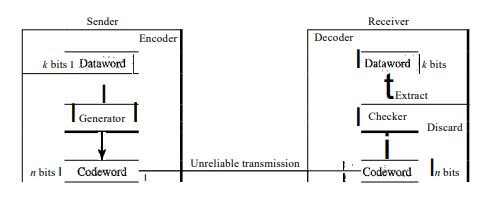
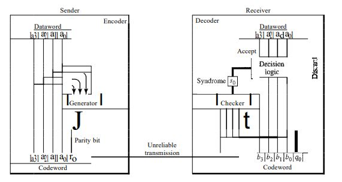
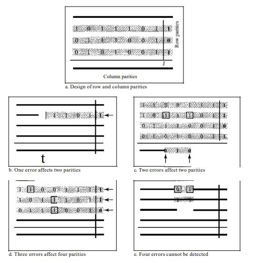
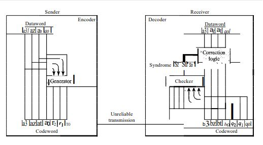
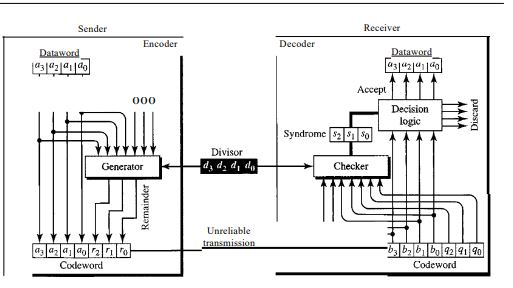

## <h3>Capitulo 10: Deteccion y correcion de errores</h3> <section> <h4></h4> <h5>Telecomunicaciones</h5> <h4>Abby Raúl Cordova Lopez</h4> <h5>Maestro: Tuxtter</h5> </section> --- ## Deteccion vs correcion <p style="font-size:3.5vh"> La detección de errores es un proceso que busca identificar si ha ocurrido un error en los datos transmitidos, sin precisar la cantidad de errores o su ubicación exacta. Este proceso se limita a dar una respuesta de “sí” o “no” ante la existencia de errores, tratándose igual tanto un error en un solo bit como una ráfaga de errores en varios bits.</p> <p style="font-size:3.5vh">En cambio, la corrección de errores es un procedimiento más complejo. No solo es necesario identificar que hay errores, sino también determinar cuántos bits están corruptos y en qué posiciones exactas se encuentran dentro del mensaje. La dificultad del proceso aumenta con el número de errores y el tamaño del mensaje; por ejemplo, corregir un único error en un mensaje de 8 bits requiere considerar ocho posibles ubicaciones, mientras que localizar y corregir dos errores incrementa las combinaciones a 28. </p> --- ## Redundancia <p style="font-size:3.5vh">La redundancia es un método de detección y corrección de errores en el que se añaden bits extra a los datos transmitidos. Estos bits adicionales, generados por el emisor, contienen información que ayuda al receptor a verificar la integridad de los datos recibidos. Una vez que los datos y los bits redundantes llegan al receptor, este utiliza los bits adicionales para identificar posibles errores o incluso corregirlos, y luego elimina los bits redundantes para obtener los datos originales.</p> --- ## Correcion de errores en avance vs Correcion por retransmision <p style="font-size:3.5vh">Corrección de errores en avance (FEC, Forward Error Correction): En este método, el emisor añade suficientes bits redundantes al mensaje para que el receptor pueda identificar y corregir ciertos errores por sí mismo, sin necesidad de solicitar un reenvío. Este método es efectivo cuando el número de errores es bajo, ya que el receptor puede reconstruir el mensaje original utilizando solo los bits redundantes. </p> <p style="font-size:3.5vh">Corrección por retransmisión (ARQ, Automatic Repeat reQuest): En este enfoque, el receptor simplemente verifica la integridad del mensaje recibido. Si detecta algún error, solicita al emisor que retransmita el mensaje. Este proceso de reenvío continúa hasta que el mensaje llega sin errores o hasta que se alcanza un límite de intentos. </p> --- ## Codificacion <p >La codificación es un método de protección de datos que añade redundancia a través de esquemas diseñados para establecer relaciones entre los bits de datos y los bits adicionales. Estos bits redundantes permiten al receptor verificar la consistencia de los datos y, en muchos casos, identificar o corregir errores en la transmisión.</p> --- ## Estructura de Codificacion y decodificacion <img src="./imagenes/Codificar _ decodificar Hall - Blog.png" style="border-radius: 8px; width: 50%; height: auto;"> --- ## Aritmetica Modular y Modulo-2 <p style="font-size:3.5vh">La aritmética modular, se utiliza con un rango limitado de enteros definidos por un límite superior, llamado módulo N, Solo se consideran enteros de 0 a N-1. Por ejemplo, con un módulo de 12, solo se utilizan los números del 0 al 11</p> <p style="font-size:3.5vh">La aritmética módulo-2 es de particular interés, ya que utiliza un módulo N, Nde 2, lo que significa que solo se emplean los números 0 y 1. Las operaciones en esta aritmética son muy simples.</p> --- ## Codificacion por bloques <p style="font-size:5vh">La codificación por bloques convierte bloques de mensaje (datawords) en palabras de código (codewords) añadiendo bits extra para detectar o corregir errores. Solo algunas combinaciones de palabras de código son válidas, lo que permite identificar y manejar errores en la transmisión</p>  --- ## Deteccion de errores : Proceso <div style="display: flex; align-items: center; justify-content: space-between; font-size: 3.5vh; "> <div style="width: 45%; padding-right: 20px;"> <p style="font-size:3vh">Este método permite detectar errores simples, ya que si una palabra de código cambia a una forma no válida, se identifica como incorrecta. Sin embargo, si el error transforma la palabra de código en otra válida, el error queda sin detectar, por lo que no es eficaz contra múltiples errores</p> <p style="font-size:3vh">El remitente utiliza un generador para crear palabras de código a partir de palabras de datos, siguiendo reglas específicas de codificación. Durante la transmisión, cada palabra de código puede sufrir cambios. Si la palabra recibida coincide con una palabra de código válida, se acepta y se extrae la información correspondiente; si no es válida, se descarta</p> </div> <div style="width: 50%; text-align: left;">  </div> </div> --- ## Correcion de errores <p style="font-size:3.5vh">La corrección de errores es un proceso más complejo que la detección de errores. En la detección, el receptor se limita a verificar si una palabra de código recibida es válida o no, lo que implica una identificación sencilla de errores. En contraste, en la corrección de errores, el receptor debe no solo detectar que ha habido un error, sino también reconstruir la palabra original que fue enviada. Esto requiere la utilización de un mayor número de bits redundantes.</p> --- ## Distancia Hamming <p style="font-size:3.5vh">La distancia de Hamming es el número de diferencias entre los bits correspondientes de dos palabras del mismo tamaño. Se calcula aplicando la operación XOR entre las dos palabras y contando los 1s en el resultado. Es un valor siempre mayor que cero</p> <img src="./imagenes/Distancia.png" style="border-radius: 8px; width: 50%; height: auto;"> --- ## Distancia minima Hamming <p style="font-size:3.5vh">Se define como la menor distancia de Hamming entre todos los pares posibles de palabras en un conjunto. Esta se denota como dmin y se obtiene calculando las distancias de Hamming entre todas las palabras y seleccionando la más pequeña</p> --- ## Codificador y decodifcador de codigo simple  --- ## Codigos Hamming <p style="font-size:3.5vh">Los códigos de Hamming son códigos de corrección de errores diseñados con dmin = 3, permitiendo detectar hasta dos errores o corregir uno. Nos centraremos en el código que corrige un solo bit.</p> <p style="font-size:3.5vh">La relación entre n y k en un código de Hamming se determina eligiendo un entero m >= 3, donde n = 2^m - 1 y k = n - m, siendo r = m el número de bits de verificación.</p> --- ## Tabla de codificacion de Hamming <table style="font-size:3.5vh"> <tr> <th>Datawords</th> <th>Codewords</th> <th>Datawords</th> <th>Codewords</th> </tr> <tr> <td>0000</td> <td>0000000</td> <td>1000</td> <td>1000110</td> </tr> <tr> <td>0001</td> <td>0001101</td> <td>1001</td> <td>1001011</td> </tr> <tr> <td>0010</td> <td>0010111</td> <td>1010</td> <td>1010001</td> </tr> <tr> <td>0011</td> <td>0011010</td> <td>1011</td> <td>1011100</td> </tr> <tr> <td>0100</td> <td>0100011</td> <td>1100</td> <td>1100101</td> </tr> <tr> <td>0101</td> <td>0101110</td> <td>1101</td> <td>1101000</td> </tr> <tr> <td>0110</td> <td>0110100</td> <td>1110</td> <td>1110010</td> </tr> <tr> <td>0111</td> <td>0111001</td> <td>1111</td> <td>1111111</td> </tr> </table> --- ## Codigo de verifacion paridad de dos dimensiones  --- ## Codificador y decodifcador de codigo Hamming  --- ## Correcion de errores burst con codigo Hamming --- ## Codigos Ciclicos <p style="font-size:3.5vh">Los códigos cíclicos son un tipo específico de códigos lineales que poseen una característica adicional muy útil: al rotar cíclicamente una palabra de código, el resultado sigue siendo otra palabra de código válida dentro del mismo conjunto. Esto significa que si se toma una palabra de código y se desplaza sus bits hacia la izquierda o hacia la derecha, la nueva secuencia obtenida también es considerada una palabra de código en ese código cíclico. Por ejemplo, si tenemos la palabra de código 1011000 y realizamos un desplazamiento cíclico a la izquierda, obtenemos 0110001 que también es una palabra de código válida en el mismo conjunto.</p> --- ## Cheque de redundancia ciclico El Cheque de Redundancia Cíclica (CRC, por sus siglas en inglés) es un método utilizado para detectar errores en datos transmitidos o almacenados. Se basa en la utilización de códigos cíclicos y tiene aplicaciones en diversas áreas de la comunicación digital, como en redes, protocolos de transmisión y almacenamiento de datos. --- ## Tabla de codigo CRC <table style="font-size:3.5vh"> <tr> <th>Dataword</th> <th>Codeword</th> <th>Dataword</th> <th>Codeword</th> </tr> <tr> <td>0000</td> <td>0000000</td> <td>1000</td> <td>1000101</td> </tr> <tr> <td>0001</td> <td>0001011</td> <td>1001</td> <td>1001110</td> </tr> <tr> <td>0010</td> <td>0010110</td> <td>1010</td> <td>1010011</td> </tr> <tr> <td>0011</td> <td>0011101</td> <td>1011</td> <td>1011000</td> </tr> <tr> <td>0100</td> <td>0100111</td> <td>1100</td> <td>1100010</td> </tr> <tr> <td>0101</td> <td>0101100</td> <td>1101</td> <td>1101001</td> </tr> <tr> <td>0110</td> <td>0110001</td> <td>1110</td> <td>1110100</td> </tr> <tr> <td>0111</td> <td>0111010</td> <td>1111</td> <td>1111111</td> </tr> </table> --- ## Codificador y decodifcador de codigo CRC  --- ## divisor <p style="font-size:3.5vh">El divisor se XOR con parte del dividendo y tiene n - k + 1 bits que son fijos. Solo se necesitan n - k bits para la operación XOR, ya que el primer bit no influye en el resultado. Con esta información, se puede crear un divisor fijo para un código cíclico si se conoce el patrón del divisor.</p> --- ## <h3>Aumento de Dataword</h3> <p style="font-size:3.5vh">En el proceso de división, el dividendo aumentado se mantiene fijo mientras los bits del divisor se desplazan a la derecha. Ahora, con el divisor fijo, se deben desplazar los bits del dividendo aumentado hacia la izquierda para alinear correctamente los bits del divisor. No es necesario almacenar los bits del dividendo aumentado.</p>